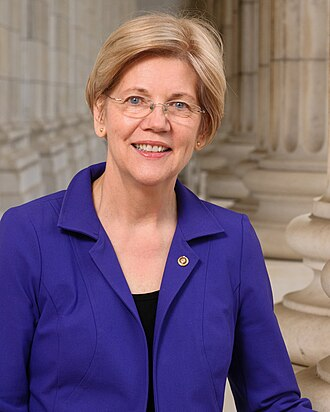
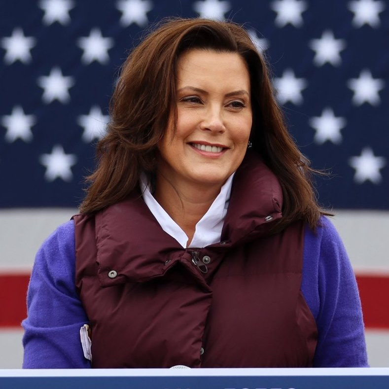

Donald Trump
The 45th President of the United States, Donald Trump is a businessman and television personality known for his unconventional approach to politics and strong stance on national security and economic issues.
- Born: June 14, 1946 (77 years old)
- City: Queens, New York City
- Education: Bachelor's degree in Economics from the Wharton School of the University of Pennsylvania
- Parents: Mary MacLeod Trump, Fred C. Trump
- Awards: Time magazine's Person of the Year (2016), Reality TV awards

Joe Biden
A seasoned politician and former Vice President of the United States, Joe Biden has a long history of public service and a reputation for bipartisanship and empathy.
- Born: November 20, 1942 (81 years old)
- City: Scranton, Pennsylvania
- Education: Bachelor's degree from the University of Delaware; Juris Doctor from Syracuse University College of Law
- Parents: Catherine Finnegan Biden, Joseph R. Biden Sr.
- Awards: Presidential Medal of Freedom, Presidential Unit Citation
Ron DeSantis
The Governor of Florida, Ron DeSantis is known for his conservative policies and leadership during the COVID-19 pandemic. He has focused on economic growth and educational reform.
- Born: September 14, 1978 (45 years old)
- City: Jacksonville, Florida
- Education: Bachelor's degree from Yale University; J.D. from Harvard Law School
- Parents: Karen Rogers DeSantis, Ronald DeSantis
- Awards: Freedom Foundation Award, Liberty Medal
Nikki Haley
Former Governor of South Carolina and U.S. Ambassador to the United Nations, Nikki Haley is recognized for her advocacy on human rights and economic development.
- Born: January 20, 1972 (52 years old)
- City: Bamberg, South Carolina
- Education: Bachelor's degree in Accounting from Clemson University
- Parents: Raj Randhawa, Ajit Singh Randhawa
- Awards: Foreign Policy's Top 50 Global Thinkers, Order of the Palmetto
Mike Pence
The 48th Vice President of the United States, Mike Pence served alongside Donald Trump and is known for his conservative positions and commitment to religious freedom.
- Born: June 7, 1959 (65 years old)
- City: Columbus, Indiana
- Education: Bachelor's degree from Hanover College; J.D. from Indiana University Robert H. McKinney School of Law
- Parents: Nancy Pence, Edward Pence
- Awards: National Religious Broadcasters' Faith and Freedom Award, Presidential Citizens Medal

Elizabeth Warren
A U.S. Senator from Massachusetts, Elizabeth Warren is known for her focus on economic fairness, consumer protection, and advocacy for progressive policies.
- Born: June 22, 1949 (75 years old)
- City: Oklahoma City, Oklahoma
- Education: Bachelor's degree from the University of Houston; J.D. from Rutgers Law School
- Parents: Pauline Reed Herring, Donald Herring
- Awards: Time magazine's 100 Most Influential People (2019), American Constitution Society's Progressive Champion Award
Andrew Yang
Entrepreneur and former presidential candidate, Andrew Yang is recognized for his advocacy on universal basic income and innovative economic policies.
- Born: January 13, 1975 (49 years old)
- City: Schenectady, New York
- Education: Bachelor's degree from Brown University; J.D. from Columbia Law School
- Parents: Dorothea Yang, Guo-Wei Yang
- Awards: Forbes 30 Under 30, Democratic National Committee's 2020 Presidential Primary

Gretchen Whitmer
The Governor of Michigan, Gretchen Whitmer is known for her leadership in managing the COVID-19 pandemic and her focus on infrastructure and education reforms.
- Born: August 23, 1971 (52 years old)
- City: Lansing, Michigan
- Education: Bachelor's degree from Michigan State University; J.D. from Detroit College of Law
- Parents: Sharon H. Clemens, Richard Whitmer
- Awards: Michigan's 2019 Woman of the Year, League of Women Voters' Advocacy Award